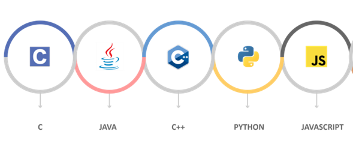

Programación de aplicaciones
La programación de aplicaciones con sockets es una técnica que permite a dos o más dispositivos en una red comunicarse entre sí de manera eficiente. Los sockets son una interfaz que permite a los programas enviar y recibir datos a través de una red, como Internet.
¿Cómo se hace una aplicación con sockets?
Para programar una aplicación con sockets, es necesario utilizar un lenguaje de programación que ofrezca soporte para este tipo de conexiones, como C, C++, Java o Python. En el desarrollo de la aplicación, se deben seguir algunos pasos básicos:
1. Crear un socket: primero se debe crear un socket en el dispositivo que desea establecer una conexión con otro dispositivo en la red. Este socket se encargará de gestionar el envío y recepción de datos.
2. Conectar el socket a una dirección de red: una vez que se ha creado el socket, se debe establecer la conexión a una dirección de red específica, como una dirección IP o un nombre de dominio.
3. Enviar y recibir datos: una vez que el socket está conectado, se pueden enviar y recibir datos a través de él. Para enviar datos, se utiliza un método llamado "send" y para recibir datos, se utiliza un método llamado "recv"
4. Cerrar el socket: cuando se ha terminado de enviar y recibir datos, se debe cerrar el socket para liberar los recursos utilizados y evitar posibles errores.
La programación de aplicaciones con sockets es una técnica muy útil para desarrollar aplicaciones que requieren comunicación en tiempo real, como juegos en línea, chat en vivo o aplicaciones de intercambio de archivos. Además, también se utiliza en aplicaciones empresariales, como sistemas de gestión de inventario o aplicaciones de atención al cliente. En resumen, la programación de aplicaciones con sockets es una habilidad valiosa para cualquier desarrollador de software.
Además, también es importante tener en cuenta que la programación de aplicaciones con sockets puede ser un poco complicada, ya que requiere un conocimiento profundo de cómo funciona la red y cómo se gestionan los sockets. Por lo tanto, es recomendable contar con una buena base de programación y conocimientos de redes para poder desarrollar aplicaciones con sockets de manera efectiva.